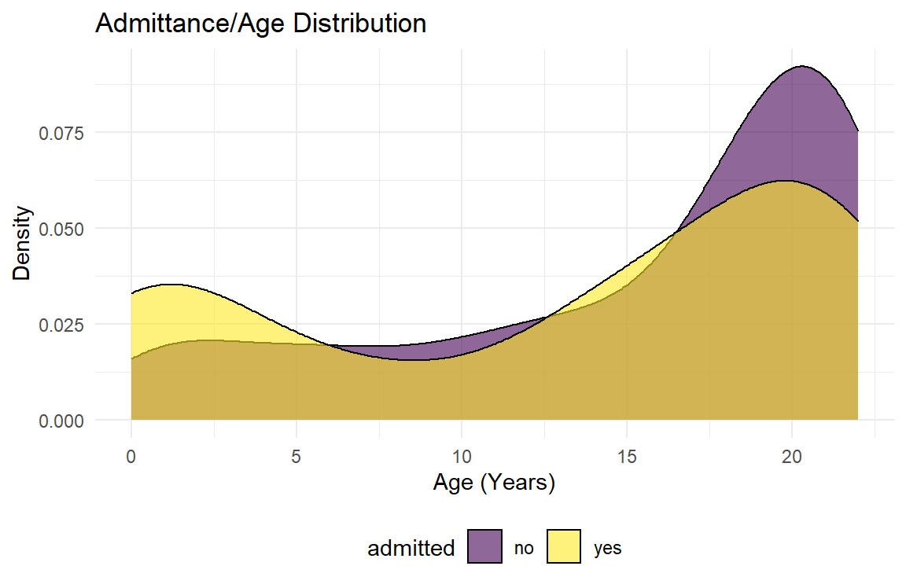
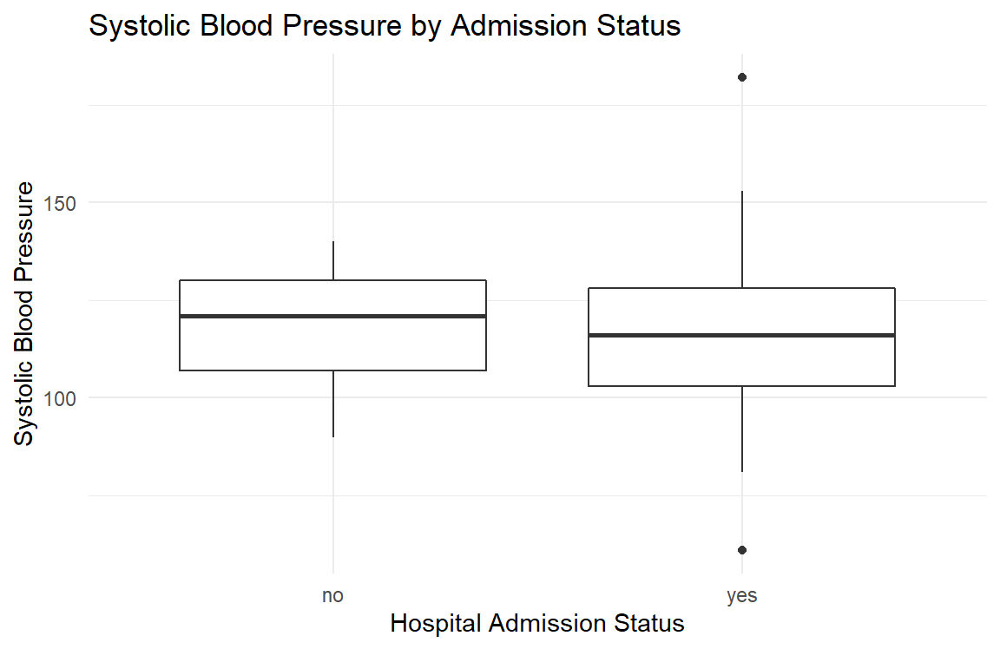

Exploratory Analysis
Setup
library(tidyverse)## ── Attaching packages ──────────────────────────────────────────────────────────────────────────────────── tidyverse 1.3.0 ──## ✓ ggplot2 3.3.2 ✓ purrr 0.3.4
## ✓ tibble 3.0.3 ✓ dplyr 1.0.2
## ✓ tidyr 1.1.2 ✓ stringr 1.4.0
## ✓ readr 1.3.1 ✓ forcats 0.5.0## ── Conflicts ─────────────────────────────────────────────────────────────────────────────────────── tidyverse_conflicts() ──
## x dplyr::filter() masks stats::filter()
## x dplyr::lag() masks stats::lag()library(aod)
library(patchwork)
library(ResourceSelection)## ResourceSelection 0.3-5 2019-07-22knitr::opts_chunk$set(
fig.width = 6,
fig.asp = 1.1,
out.width = "100%")
theme_set(theme_minimal() + theme(legend.position = "bottom"))
options(
ggplot2.continuous.colour = "viridis",
ggplot2.continuous.fill = "viridis")
scale_colour_discrete = scale_color_viridis_d
scale_fill_discrete = scale_fill_viridis_d
knitr::opts_chunk$set(comment = NA, message = FALSE, warning = FALSE, echo = TRUE)Data import and tidy
data_stats = read_csv("./datacomplete.csv") %>%
mutate_at(c("admitted", "ethnicity_race", "asthma", "diabetes", "gender", "obesity", "icu"), as.factor) %>%
select(admitted, icu, age, ethnicity_race, gender, ses, obesity, bmi_value, systolic_bp_value, asthma, diabetes)
summary(data_stats) admitted icu age ethnicity_race gender
no :250 0:355 Min. : 0.00 american indian: 2 F:190
yes:125 1: 20 1st Qu.:10.00 asian : 14 M:185
Median :18.00 black : 92
Mean :14.63 caucasian : 21
3rd Qu.:21.00 latino :228
Max. :22.00 multiple : 18
ses obesity bmi_value systolic_bp_value asthma diabetes
Min. :-13.506 0:249 Min. :12.03 Min. : 61.0 0:314 0:358
1st Qu.: -6.496 1:126 1st Qu.:19.04 1st Qu.:103.0 1: 61 1: 17
Median : -3.637 Median :24.03 Median :117.0
Mean : -3.892 Mean :26.54 Mean :115.3
3rd Qu.: -1.419 3rd Qu.:32.12 3rd Qu.:128.0
Max. : 2.931 Max. :80.84 Max. :182.0 Dataset exploration
This is a dataset of 375 pediatric patients 0 to 23 years of age with COVID-19 infection. First, we explore the data by generating various ggplots.
Age
There appears to be a bimodal distribution of hospital admission as a function of age. Among infants and toddlers less than 5 years of age who test positive for COVID-19, more are admitted than not admitted. However, after 16 years of age, hospitalizations for COVID-19 infection appear to be less than non-hospitalizations.
Some pediatric patients require admission to the Intensive Care Unit (ICU). Fewer infants and toddlers with COVID-19 infection require admission to the ICU until about 3 years of age. Beginning at 10 years of age, there seems to be a steeper rise in the density of ICU admissions for children with COVID-19 infection compared to non-ICU admissions.
admitt_p =
data_stats %>%
ggplot(aes(x = age, fill = admitted)) +
geom_density(alpha = .6) +
labs(
title = "Admittance/Age Distribution",
x = "Age (Years)",
y = "Density") +
theme(legend.position = "bottom")
icu_p =
data_stats %>%
ggplot(aes(x = age, fill = icu)) +
geom_density(alpha = .6) +
labs(
title = "ICU/Age Distribution",
x = "Age (Years)",
y = "Density") +
theme(legend.position = "bottom")
admitt_p / icu_p
Obesity, diabetes, and asthma
The distribution of obesity, diabetes, and asthma diagnoses in pediatric patients with COVID-19 infection by age are show below. Obesity, as defined as a body mass index (BMI) of > 30, is general not present at ages less than 10 years. After 10 years, the prevalence of obesity increases. This is generally true for diabetes as asthma as well.
obesity_p =
data_stats %>%
ggplot(aes(x = age, fill = obesity)) +
geom_density(alpha = .6) +
labs(
title = "Obesity/Age Distribution",
x = "Age (Years)",
y = "Density") +
theme(legend.position = "bottom")
diabetes_p =
data_stats %>%
ggplot(aes(x = age, fill = diabetes)) +
geom_density(alpha = .6) +
labs(
title = "Diabetes/Age Distribution",
x = "Age (Years)",
y = "Density") +
theme(legend.position = "bottom")
asthma_p =
data_stats %>%
ggplot(aes(x = age, fill = asthma)) +
geom_density(alpha = .6) +
labs(
title = "Asthma/Age Distribution",
x = "Age (Years)",
y = "Density") +
theme(legend.position = "bottom")
obesity_p / diabetes_p / asthma_p
Box plots
Below, we explore first systolic blood pressure, BMI, and socioeconomic status (SES) by admission status. The median first systolic pressure is higher among admitted patients compared to non-admitted patients. BMI appears to be similar, but wiht some high BMI outliers in the non-hospitalized group. Median SES is lower among admitted patients.
bp_p =
data_stats %>%
ggplot(aes(x = icu, y = systolic_bp_value)) +
geom_boxplot() +
labs(
title = "Systolic Blood Pressure by Admission Status",
x = "Hospital Admission Status",
y = "Systolic Blood Pressure")
bmi_p =
data_stats %>%
ggplot(aes(x = icu, y = bmi_value)) +
geom_boxplot() +
labs(
title = "BMI by Admission Status",
x = "Hospital Admission Status",
y = "BMI Value")
ses_p =
data_stats %>%
ggplot(aes(x = icu, y = ses)) +
geom_boxplot() +
labs(
title = "Socioeconomic Status by Admission Status",
x = "Hospital Admission Status",
y = "SES Measure")
bp_p / bmi_p / ses_p
Possible Models
initial_fit =
glm(admitted ~ age + gender + ethnicity_race + asthma + diabetes + obesity,
family = binomial(link = "logit"),
data = data_stats) %>%
broom::tidy() %>%
mutate(OR = exp(estimate)) %>%
select(term, p.value, everything()) %>%
knitr::kable(digits = 3)
initial_fit| term | p.value | estimate | std.error | statistic | OR |
|---|---|---|---|---|---|
| (Intercept) | 0.981 | -13.979 | 589.290 | -0.024 | 0.000 |
| age | 0.001 | -0.055 | 0.017 | -3.266 | 0.946 |
| genderM | 0.879 | -0.035 | 0.232 | -0.152 | 0.965 |
| ethnicity_raceasian | 0.981 | 14.317 | 589.291 | 0.024 | 1651035.500 |
| ethnicity_raceblack | 0.981 | 13.905 | 589.290 | 0.024 | 1093265.497 |
| ethnicity_racecaucasian | 0.981 | 14.182 | 589.290 | 0.024 | 1442205.018 |
| ethnicity_racelatino | 0.981 | 13.892 | 589.290 | 0.024 | 1079344.536 |
| ethnicity_racemultiple | 0.982 | 13.242 | 589.291 | 0.022 | 563779.889 |
| asthma1 | 0.074 | 0.562 | 0.315 | 1.788 | 1.755 |
| diabetes1 | 0.001 | 2.035 | 0.598 | 3.403 | 7.651 |
| obesity1 | 0.982 | -0.006 | 0.278 | -0.023 | 0.994 |
# hl <- hoslem.test(initial_fit$admitted, fitted(initial_fit), g = 10)
# hl
# wald.test(b = coef(initial_fit), Sigma = vcov(initial_fit), Terms = 4:8)complex_fit =
glm(admitted ~ age + gender + ethnicity_race + asthma + diabetes + bmi_value + systolic_bp_value + ses,
family = binomial(link = "logit"),
data = data_stats) %>%
broom::tidy() %>%
mutate(OR = exp(estimate)) %>%
select(term, p.value, everything()) %>%
knitr::kable(digits = 3)
complex_fit| term | p.value | estimate | std.error | statistic | OR |
|---|---|---|---|---|---|
| (Intercept) | 0.980 | -14.922 | 594.624 | -0.025 | 0.000 |
| age | 0.000 | -0.074 | 0.021 | -3.562 | 0.928 |
| genderM | 0.515 | -0.162 | 0.248 | -0.652 | 0.851 |
| ethnicity_raceasian | 0.981 | 14.152 | 594.623 | 0.024 | 1399857.334 |
| ethnicity_raceblack | 0.982 | 13.666 | 594.623 | 0.023 | 861156.133 |
| ethnicity_racecaucasian | 0.981 | 13.993 | 594.623 | 0.024 | 1193750.504 |
| ethnicity_racelatino | 0.982 | 13.621 | 594.623 | 0.023 | 823267.319 |
| ethnicity_racemultiple | 0.982 | 13.093 | 594.624 | 0.022 | 485495.983 |
| asthma1 | 0.069 | 0.580 | 0.319 | 1.816 | 1.786 |
| diabetes1 | 0.001 | 1.921 | 0.605 | 3.177 | 6.826 |
| bmi_value | 0.634 | 0.006 | 0.014 | 0.476 | 1.006 |
| systolic_bp_value | 0.094 | 0.013 | 0.008 | 1.677 | 1.013 |
| ses | 0.447 | 0.032 | 0.042 | 0.761 | 1.032 |
play_fit =
glm(admitted ~ age + gender + asthma + diabetes + bmi_value + systolic_bp_value + ses,
family = binomial(link = "logit"),
data = data_stats) %>%
broom::tidy() %>%
mutate(OR = exp(estimate)) %>%
select(term, p.value, everything()) %>%
knitr::kable(digits = 3)
play_fit| term | p.value | estimate | std.error | statistic | OR |
|---|---|---|---|---|---|
| (Intercept) | 0.093 | -1.277 | 0.761 | -1.678 | 0.279 |
| age | 0.000 | -0.073 | 0.020 | -3.612 | 0.930 |
| genderM | 0.572 | -0.137 | 0.242 | -0.565 | 0.872 |
| asthma1 | 0.044 | 0.621 | 0.308 | 2.016 | 1.861 |
| diabetes1 | 0.001 | 1.935 | 0.602 | 3.213 | 6.927 |
| bmi_value | 0.675 | 0.005 | 0.013 | 0.419 | 1.005 |
| systolic_bp_value | 0.080 | 0.013 | 0.007 | 1.749 | 1.013 |
| ses | 0.340 | 0.038 | 0.040 | 0.955 | 1.039 |
Asthma and Diabetes seem to be important predictors
icu1_fit =
glm(icu ~ age + gender + ethnicity_race + asthma + diabetes + obesity,
family = binomial(link = "logit"),
data = data_stats) %>%
broom::tidy() %>%
mutate(OR = exp(estimate)) %>%
select(term, p.value, everything()) %>%
knitr::kable(digits = 3)
icu1_fit| term | p.value | estimate | std.error | statistic | OR |
|---|---|---|---|---|---|
| (Intercept) | 0.997 | -18.950 | 4609.321 | -0.004 | 0.000 |
| age | 0.837 | -0.008 | 0.039 | -0.205 | 0.992 |
| genderM | 0.374 | 0.470 | 0.528 | 0.890 | 1.600 |
| ethnicity_raceasian | 1.000 | 0.407 | 4922.188 | 0.000 | 1.502 |
| ethnicity_raceblack | 0.997 | 16.148 | 4609.321 | 0.004 | 10300405.637 |
| ethnicity_racecaucasian | 0.997 | 15.068 | 4609.321 | 0.003 | 3498863.449 |
| ethnicity_racelatino | 0.997 | 15.566 | 4609.321 | 0.003 | 5756650.974 |
| ethnicity_racemultiple | 1.000 | 0.638 | 4853.942 | 0.000 | 1.894 |
| asthma1 | 0.522 | -0.451 | 0.705 | -0.640 | 0.637 |
| diabetes1 | 0.000 | 3.436 | 0.645 | 5.323 | 31.050 |
| obesity1 | 0.460 | -0.504 | 0.682 | -0.739 | 0.604 |
icu2_fit =
glm(icu ~ age + gender + ethnicity_race + asthma + diabetes + bmi_value + systolic_bp_value + ses,
family = binomial(link = "logit"),
data = data_stats) %>%
broom::tidy() %>%
mutate(OR = exp(estimate)) %>%
select(term, p.value, everything()) %>%
knitr::kable(digits = 3)
icu2_fit| term | p.value | estimate | std.error | statistic | OR |
|---|---|---|---|---|---|
| (Intercept) | 0.997 | -19.055 | 4591.657 | -0.004 | 0.000 |
| age | 0.899 | -0.006 | 0.048 | -0.127 | 0.994 |
| genderM | 0.392 | 0.483 | 0.564 | 0.857 | 1.621 |
| ethnicity_raceasian | 1.000 | 0.502 | 4904.944 | 0.000 | 1.653 |
| ethnicity_raceblack | 0.997 | 16.185 | 4591.657 | 0.004 | 10696327.902 |
| ethnicity_racecaucasian | 0.997 | 15.169 | 4591.657 | 0.003 | 3869025.901 |
| ethnicity_racelatino | 0.997 | 15.642 | 4591.657 | 0.003 | 6215033.974 |
| ethnicity_racemultiple | 1.000 | 0.850 | 4833.925 | 0.000 | 2.340 |
| asthma1 | 0.690 | -0.288 | 0.722 | -0.398 | 0.750 |
| diabetes1 | 0.000 | 3.520 | 0.694 | 5.074 | 33.777 |
| bmi_value | 0.257 | -0.033 | 0.029 | -1.133 | 0.967 |
| systolic_bp_value | 0.805 | 0.005 | 0.019 | 0.247 | 1.005 |
| ses | 0.713 | -0.035 | 0.095 | -0.368 | 0.966 |
icu3_fit =
glm(icu ~ age + gender + asthma + diabetes + bmi_value + systolic_bp_value + ses,
family = binomial(link = "logit"),
data = data_stats) %>%
broom::tidy() %>%
mutate(OR = exp(estimate)) %>%
select(term, p.value, everything()) %>%
knitr::kable(digits = 3)
icu3_fit| term | p.value | estimate | std.error | statistic | OR |
|---|---|---|---|---|---|
| (Intercept) | 0.052 | -3.668 | 1.885 | -1.946 | 0.026 |
| age | 0.998 | 0.000 | 0.046 | -0.002 | 1.000 |
| genderM | 0.496 | 0.372 | 0.546 | 0.682 | 1.451 |
| asthma1 | 0.747 | -0.230 | 0.714 | -0.323 | 0.794 |
| diabetes1 | 0.000 | 3.548 | 0.679 | 5.225 | 34.729 |
| bmi_value | 0.146 | -0.042 | 0.029 | -1.454 | 0.959 |
| systolic_bp_value | 0.627 | 0.009 | 0.018 | 0.487 | 1.009 |
| ses | 0.611 | -0.046 | 0.091 | -0.509 | 0.955 |